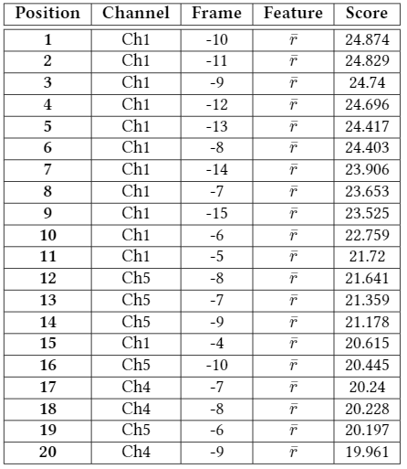

dimensionalityReduction module
Dependencies
The libraries that are necessary for using this module are the following ones:
import drawBarPlot
import numpy as np
from sklearn.discriminant_analysis import LinearDiscriminantAnalysis
from sklearn.feature_selection import SelectKBest, f_classif, mutual_info_classif
import time
Functions
- dimensionalityReduction.featureSelection(nFeatures, method, trainFeatures, testFeatures, trainLabels, featureNames, nChannels, stackingWidth, dirPath, probeName)
This function calculates some scores with the given score function and selects the
nFeaturesfeatures with the highest scores. It also saves a table with the selected features sorted by the score given to them.- Parameters
nFeatures (int) – Number of features wanted as output.
method (str) – The selected score function. The allowed values are
f_classifandmutual_info_classif.trainFeatures (numpy.ndarray) – The features from the training subset.
testFeatures (numpy.ndarray) – The features from the testing subset.
trainLabels (numpu.ndarray) – The labels from the training subset.
featureNames (list) – The names given to each kind of feature in every frame.
nChannels (int) – Number of channels that are being analyzed.
stackingWidth (int) – Number of frames stacked in the stacking filter. It has to be kept in mind that this is the number stacked to each side of the central frame, so the total number of frames is
2*nFeatures + 1.dirPath (str) – The base path to the analyzed corpus.
probeName (str) – Name given to the probe. This is the name of the subfolder in the forder
Resultswhere the results of the experiments will be saved.
Example of use:
>>> import datasetManipulation >>> import dimensionalityReduction >>> import numpy as np >>> from sklearn.model_selection import train_test_split >>> batch = np.load("batch.npy") >>> batch = datasetManipulation.removeNaN(batch)[0] >>> features = batch[:,1:] >>> labels = batch[:,0] >>> trainFeatures, testFeatures, trainLabels, testLabels = train_test_split(features, labels, test_size=0.33) >>> >>> nFeatures = 20 >>> method = 'f_classif' >>> nChannels = 6 >>> stackingWidth = 15 >>> featureNames = ['w','Pw','Pr','z','r'] >>> probeName = 'TestExperiment' >>> >>> print(np.shape(trainFeatures)) # Size of train features (70526, 930) >>> print(np.shape(testFeatures)) # Size of test features (34737, 930) >>> reducedTrainFeatures, reducedTestFeatures = dimensionalityReduction.featureSelection(nFeatures, method, trainFeatures, testFeatures, trainLabels, featureNames, nChannels, stackingWidth, dirPath, probeName) Feature selection results: Shape of train features before feature selection: (70526, 930) Shape of train features after feature selection: (70526, 20) Execution time 00:00:00 >>> print(np.shape(reducedTrainFeatures)) (70526, 20) >>> print(np.shape(reducedTestFeatures)) (34737, 20)
The function also has created a text file named
f_classif20Ranking.txtin the{dirPath}/results/TestExperimentfolder. It contents a LaTeX formated table with the ranking of the scores that have been selected:\begin{tabular}{|c|c|c|c|c|} \hline \textbf{Position} & \textbf{Channel} & \textbf{Frame} & \textbf{Feature} & \textbf{Score} \\ \hline\hline \textbf{ 1 } & Ch1 & -10 & $\bar{r}$ & 24.874 \\ \hline \textbf{ 2 } & Ch1 & -11 & $\bar{r}$ & 24.829 \\ \hline \textbf{ 3 } & Ch1 & -9 & $\bar{r}$ & 24.74 \\ \hline \textbf{ 4 } & Ch1 & -12 & $\bar{r}$ & 24.696 \\ \hline \textbf{ 5 } & Ch1 & -13 & $\bar{r}$ & 24.417 \\ \hline \textbf{ 6 } & Ch1 & -8 & $\bar{r}$ & 24.403 \\ \hline \textbf{ 7 } & Ch1 & -14 & $\bar{r}$ & 23.906 \\ \hline \textbf{ 8 } & Ch1 & -7 & $\bar{r}$ & 23.653 \\ \hline \textbf{ 9 } & Ch1 & -15 & $\bar{r}$ & 23.525 \\ \hline \textbf{ 10 } & Ch1 & -6 & $\bar{r}$ & 22.759 \\ \hline \textbf{ 11 } & Ch1 & -5 & $\bar{r}$ & 21.72 \\ \hline \textbf{ 12 } & Ch5 & -8 & $\bar{r}$ & 21.641 \\ \hline \textbf{ 13 } & Ch5 & -7 & $\bar{r}$ & 21.359 \\ \hline \textbf{ 14 } & Ch5 & -9 & $\bar{r}$ & 21.178 \\ \hline \textbf{ 15 } & Ch1 & -4 & $\bar{r}$ & 20.615 \\ \hline \textbf{ 16 } & Ch5 & -10 & $\bar{r}$ & 20.445 \\ \hline \textbf{ 17 } & Ch4 & -7 & $\bar{r}$ & 20.24 \\ \hline \textbf{ 18 } & Ch4 & -8 & $\bar{r}$ & 20.228 \\ \hline \textbf{ 19 } & Ch5 & -6 & $\bar{r}$ & 20.197 \\ \hline \textbf{ 20 } & Ch4 & -9 & $\bar{r}$ & 19.961 \\ \hline \end{tabular}After pasting this code into a LaTeX document and compiling it, the resulting table will look like this:

{kind=link}
- dimensionalityReduction.featureLDAReduction(nComponents, trainFeatures, testFeatures, trainLabels)
This function reduces the number of dimensions to
nComponentsusing the Linear Discriminant Analysis Reduction method.- Parameters
nComponents (int) – The number of components wanted as output.
trainFeatures (numpy.ndarray) – The features from the training subset.
testFeatures (numpy.ndarray) – The features from the testing subset.
trainLabels (numpu.ndarray) – The labels from the training subset.
Example of use:
>>> import datasetManipulation >>> import dimensionalityReduction >>> import numpy as np >>> from sklearn.model_selection import train_test_split >>> batch = np.load("batch.npy") >>> batch = datasetManipulation.removeNaN(batch)[0] >>> features = batch[:,1:] >>> labels = batch[:,0] >>> trainFeatures, testFeatures, trainLabels, testLabels = train_test_split(features, labels, test_size=0.33) >>> >>> nComponents = 20 >>> >>> print(np.shape(trainFeatures)) # Size of train features (70526, 930) >>> print(np.shape(testFeatures)) # Size of test features (34737, 930) >>> >>> reducedTrainFeatures, reducedTestFeatures = dimensionalityReduction.featureLDAReduction(nComponents, trainFeatures, testFeatures, trainLabels) LDA results: Shape of train features before LDA transform: (70526, 930) Shape of train features after LDA transform: (70526, 20) Execution time 00:00:09 >>> >>> print(np.shape(reducedTrainFeatures)) (70526, 20) >>> print(np.shape(reducedTestFeatures)) (34737, 20)